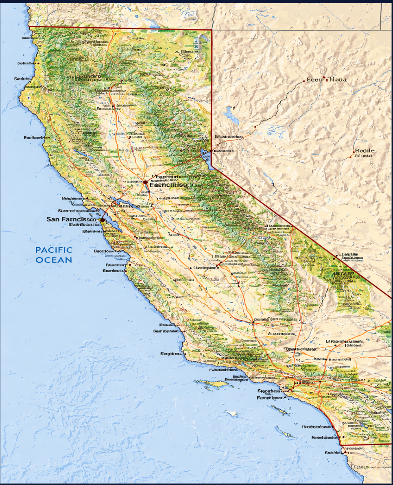
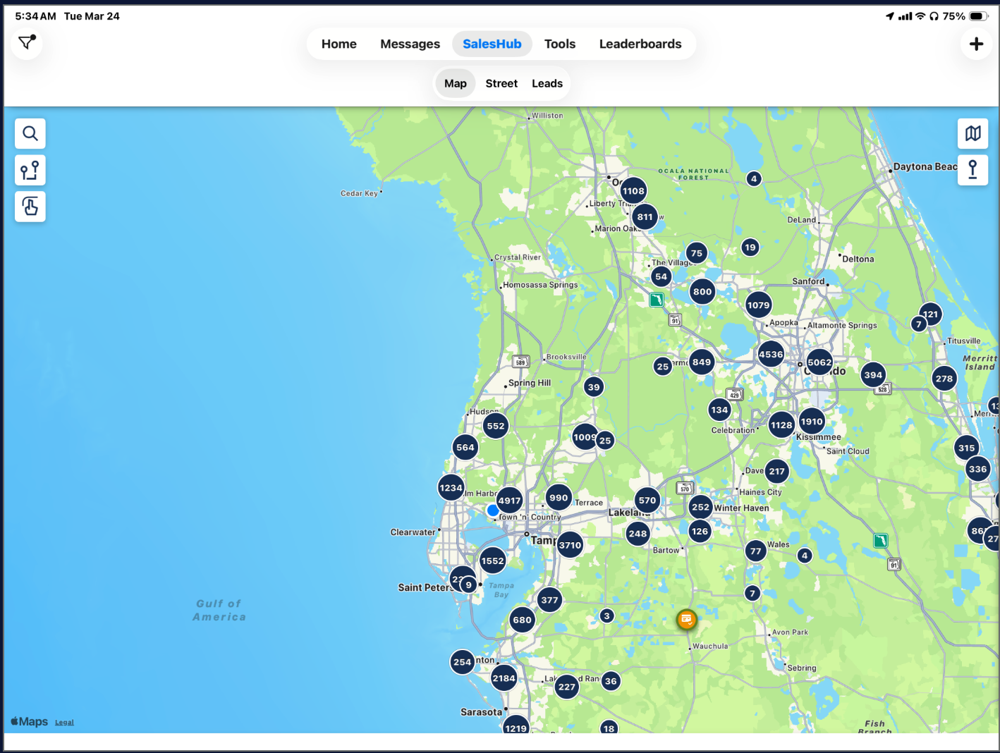

U.S. Shingle & Metal LLC
Please scan QR code
Then check your email (spam too if you can't find)
From Collier County to all of Florida
…we keep climbing.
Big news

…and we attribute this to our continued success.
#1 of 2
What "lying" means here
Character thing — you made the choice.
Every interaction with a homeowner, a rep, a manager, the office — telling the truth is a decision you make every single time.
We don't coach lying out of people. We don't put you on a plan for it. The job isn't right for you here.
Choose right. Every time.
#2 of 2
What "gossip" means here
If there are issues, we want to know about them. Real problems get raised to people who can fix them.
But by saying it to someone who can't effect change, all you are doing is creating drama.
That is a cancer — and we will remove it.
The elusive question
The research behind it
(FITD) — one of the most studied compliance principles in modern psychology.
It's directly applicable to how we move prospects through a roofing sale.
Freedman & Fraser · 1966
Researchers asked homeowners to put a small "Be a Safe Driver" sticker in their window.
Two weeks later, they came back and asked the same homeowners to put a huge, ugly "Drive Carefully" billboard on their front lawn.
A 4.5× lift from getting one small "yes" first.
The key insight
Driver 1 · Daryl Bem
People look at their own behavior to figure out who they are.
Once someone agrees to a small request, they unconsciously update their self-image:
"I'm the kind of person who helps this company / cares about my roof / takes action on my home."
The next ask aligns with that new identity — so saying no creates internal friction.
Driver 2 · Leon Festinger
Humans have a deep need for their actions, beliefs, and self-image to line up.
Once you've taken step one, refusing step two means admitting step one was meaningless — or that you were inconsistent.
Most people would rather take the bigger step than feel that inconsistency.
Driver 3 · Robert Cialdini
Cialdini ranks this as one of the six universal principles of influence.
Commitments are stickiest when they are:
That's why getting someone to fill out the inspection sign-up is so much more powerful than just looking at a flyer. They've committed something in writing.
Driver 4 · Behavioral economics
Once people invest time, attention, or emotion, walking away feels like losing what they already put in.
Every step in our flow is something they've already invested in.
Bonus technique · Guéguen
Guéguen's research shows that adding that exact phrase to any request roughly doubles compliance.
It removes the pressure response and reinforces autonomy — which paradoxically makes people more likely to say yes.
Drop it into a close: "You're absolutely free to take time and think about it, but here's what I'd recommend…"
#1 of 2 · Goal
(Goal #2 — we'll get to it in a minute.)
It was an effective way of marketing — back then.
Important distinction
Before this program
Reps would go and identify 50 houses where the roofs looked old.
Then they'd scrub them against the property appraiser to find out which ones were owner-occupied.
By the time they were done scrubbing, they were left with 20 homes they could actually talk to.
That's 60% lost — and we haven't even knocked yet.
And if you went door to door cold — without scrubbing — your first problem is getting them home. Then [≈ TODO: % non-homeowners] of the doors you knock on aren't even homeowners.
Can you see why door to door isn't as effective as it used to be?
Through technology and a lot of in-house programming, we were able to identify two things at once —

Every home you talk to is a homeowner — with a roof old enough to be a real conversation. No renters. No new builds. No wasted stops.
When a roof gets to be 15 years old or older, the homeowner can get a letter from their insurance company that says —
Because if the insurance company drops them — their mortgage company will put forced-place insurance on the home.
Mortgage company's policy. Their terms. Their price.
That's 3-4x what they were paying — overnight.
Forced-place only covers the structure. Not their furniture. Not their electronics. Not their family photos. Not anything inside the four walls.
Remember the research — every commitment chain starts with a small yes. That's the whole game.
That used to work. Today — there are two big problems with it.
For the past few years, all over the media — TV, news, social — the story has been pushed into the homeowner's head that —
That's the story they've been told — over and over and over.
But in media —
And in the homeowner's mind — the story is already written.
The second the homeowner hears "roofing company," they brace for the whole chain — insurance fight, claim filed, rates going up, new roof, money, contractor in their yard for a week.
That's not a foot in the door. That's the whole staircase — and they're being asked to commit to it on the porch.
We've got two things working against us — and one thing the homeowner doesn't know we know about.
Notice who the actual villain is in the second column.
We're the people who showed up — before the letter — to give them ammunition against it.
Same uniform. Same truck. Totally different side of the table.
"If you got the letter tomorrow — would you rather have just the option of coming out of pocket to replace your roof —
— or would you like the added option of showing them an inspection report where they leave you alone?"
We didn't ask them to file a claim. We didn't ask them to buy a roof. We didn't ask them to pick us over their insurance.
We asked them "would you like an added option to defend yourself against a letter you're probably going to get?"
That's the small yes. Every single time.
Step 1 of 5
Step 2 of 5
Step 3 of 5
Filling the need & saving them money.
Step 4 of 5
Rule of the room
If every tag question starts with "So is it fair to say…" the homeowner hears a script.
The goal is they don't notice the close — it feels like a normal conversation.
Rotate. Mix. Listen to your own rhythm. The pattern is the same — the words shouldn't be.
Step 5 of 5
Why people buy — pulled from HSN.
Impulse 1
It won't always be available.
Here today, gone tomorrow.
HSN: Number of items left until sold out
Impulse 2
Confidence in your product.
Comfortably willing to walk away.
HSN: Item on deck window
Impulse 3
People want what others have.
Keeping up with the Joneses.
HSN: How many have sold counter
Impulse 4
"I will only be in your area for a short while!"
HSN: How much time remaining until sold out
Complete these four to graduate Quick Start:
Once this is complete you will receive $1,500 for completing Quick Start.
Requirements to become senior:
Free-inspection version — replaces the old "Instant Roof Quote" script.
"Hi, my name is __________. I'm stopping by because we sent you something in the mail in regards to your roof.
We sent this to you because according to county records you are at high risk of the insurance company dropping you JUST BECAUSE OF THE AGE OF YOUR ROOF!
Let me ask you one question — if you were to get the letter tomorrow from the insurance, would you rather have just the option of coming out of pocket to replace your roof, or would you like the added option of showing them an inspection report where they would leave you alone?
Great — that's exactly why I'm here. We're here to get you scheduled for a no-cost roof inspection. If there's no damage, we'll provide you an official inspection certificate that says you have 5+ years of life left in your roof. This will make them leave you alone.
PA forms gating
"If the PA finds that you have enough storm damage to get the insurance company to pay for it — do you want them starting right away to get you your new roof?"
(If they say yes → get the PA forms signed too. You'll need the insurance company + policy number.)
If they don't have the info handy: "That's fine, let's just do the inspection — if you have storm damage I can come back and get that information."
Time kills all deals — get some kind of commitment.
"What we are going to do tonight is tell you a little bit about who we are as a company, take photos of everything, and show you all the options and types of materials that are available to you — while guaranteeing a 30-day price.
However, first I need to ask you some questions to find out what your wants and needs are, so that I can customize the estimate for exactly what you want — and not just what my boss or our suppliers want you to buy. Fair enough?
Let's be clear: I am not here to sell you on buying a roof, you already know you need one of those right?" (Warm up with customer survey.)
Control Point · 15 Years
"When dealing with a company for your roof, how important is it to you that they are likely to be around in the future if you have a need or if something goes wrong?" (Most will answer "important.")
"Absolutely. Studies show that over 50% of companies fail to make it to 5 years and 80% fail to make it to their 15th birthday. Since it's important that the company you choose is around when you need them, I have great news. We are now over 15 years old — which should demonstrate that the likelihood of us being around if you need us is extremely high. Wouldn't you agree?"
"So — correct me if I'm wrong, but it sounds like experience matters to you?"
Control Point · Veteran Owned
"We are also a Veteran-owned company. How important is that to you?"
(If they say important, ask them why. You're driving out the characteristics: discipline + structure — let them say it. Worst case if they say it's not important, follow up with:)
"I figure — if we can trust them to protect our freedom, we can certainly trust them to protect our home!"
Then ask: "If you had the opportunity to do business with a roofing company that seems to have these qualities — discipline, structure — versus one you're not sure of, which would you rather have?"
(They will always pick the company with those characteristics.)
"So — is it fair to say that us being a Veteran-owned company gives us a little bit of credibility?"
Control Point · Google Reviews
"What did you do to research us before today? Would you agree that people are more likely to complain about companies when they had a bad experience than say good things when they had a great one?
Well, the good news is we have tons of 5-star reviews, so you'll find that everything we talk about today will be backed up by our rating on Google."
"As consumers we've gone from checking the BBB to now just seeing what others say on Google. Truthfully, we are pretty limited on ways to check on the viability of a business.
Let me ask you this: If you were a bank and you wanted to help homeowners finance a roof, you'd want to make sure you got paid back, right? So you'd definitely want to only loan money to people whose roofing companies are solid and do good work — otherwise you risk people not wanting to pay. Make sense?"
Control Point · Direct Finance
"Another feather in our cap: we are also one of just a few companies licensed by the State of Florida to offer direct-to-consumer financing.
In fact, some of these finance companies that have agreed to put their name next to ours took over two months to approve us. They've looked at our finances, our install record, our record with the State, and so on. The good news is — they did your homework for you in vetting us out.
Even if you didn't finance, you'd agree that doing business with a company that can pass that kind of rigorous background check is better than a chuck-in-a-truck, right?"
"When protecting everything you own and everyone you love — is the cheapest the most important thing, or is getting the best value for your money important?"
Control Point · CCC License
"This is our Roofing license. Notice it's a Triple C license — that means it's a statewide approved license. A lot of roofing contractors only have an RC license, which is specific to just one county.
Did you know that if you hire unlicensed contractors, not only can the county fine you up to $5,000, but they can also force you to do the job again? The liability falls on the homeowner to verify licensing.
You want a fully licensed contractor, right?"
Control Point · Insurance
"When choosing a roofing company, would you rather deal with a company that just does the minimum when it comes to liability insurance — or a company that wants to make sure that everything is covered from beginning to end?
The State of Florida requires a minimum of $100,000 injury and $25,000 property damage. Our policy is $1 million / $2 million — to make sure while we're doing the work, if anything happens, you can feel comfortable to know you are not exposed at all.
You aren't opposed to having more coverage, are you?"
"I don't really have to sell anything. I mean — roofing isn't like solar or water softeners where you might have to be convinced you need it. You already know you need a roof, right?
Nobody wakes up in the morning and goes 'Oh, I can't wait to buy a roof today!' I'm not really here because you want me to be — I'm really only here because you need me to be."
"Let's say we get a little crazy and decide we are going skydiving. When we got there, they said we had our pick at who is going to pack our parachutes. One has 5 years of experience, the other has over 15 years of experience. Who are you going to pick?"
(They'll say 15 years — then ask them WHY.)
"Exactly — because experience matters, doesn't it? Let's face it — if there's just a 1% chance the chute doesn't open, that's 1% too much, am I right?
So, since the roof is protecting most of what you own — but more importantly everyone you love — is that any less important?"
"Now let's add one more layer. The guy with 5 years of experience charges $200, but the guy with over 15 years charges 20% more at $240 to pack the chutes.
You're still picking the guy with all the experience, aren't you? It's because experience is worth paying just a little more for — the peace of mind to know the chute will open, or the roof won't leak. Am I right?
One of the other advantages to using a company that does the volume we do is that we attract the best crews — because we keep them busy year-round. This way we get to make sure we have the best possible people at your home."
Control Point · Manufacturer
"Suppliers also sell their materials to us for less because of the same reason — in fact, they fight over us because we do volume and are consistent. This allows us to pass some savings on to you but still be competitive in the market. Obviously, we need to be profitable to be around for you in the future — you understand that, right?
Lastly — we are not just a roofer. We are also a manufacturer. If you decide today to buy your last roof, you'll be dealing not only with the roofing company but also the manufacturer as well. One-stop shopping.
We have a facility right here in Florida and manufacture all our own metal roof panels and trim to go with it."
Slide 44 — image slide
Placeholder — original PDF had a visual here. Tell Neal what goes on this slide and I'll author it.
Slide 45 — image slide
Placeholder.
Slide 46 — image slide
Placeholder.
Slide 47 — image slide
Placeholder.
Slide 48 — image slide
Placeholder.
Slide 49 — image slide
Placeholder.
Slide 50 — image slide
Placeholder.